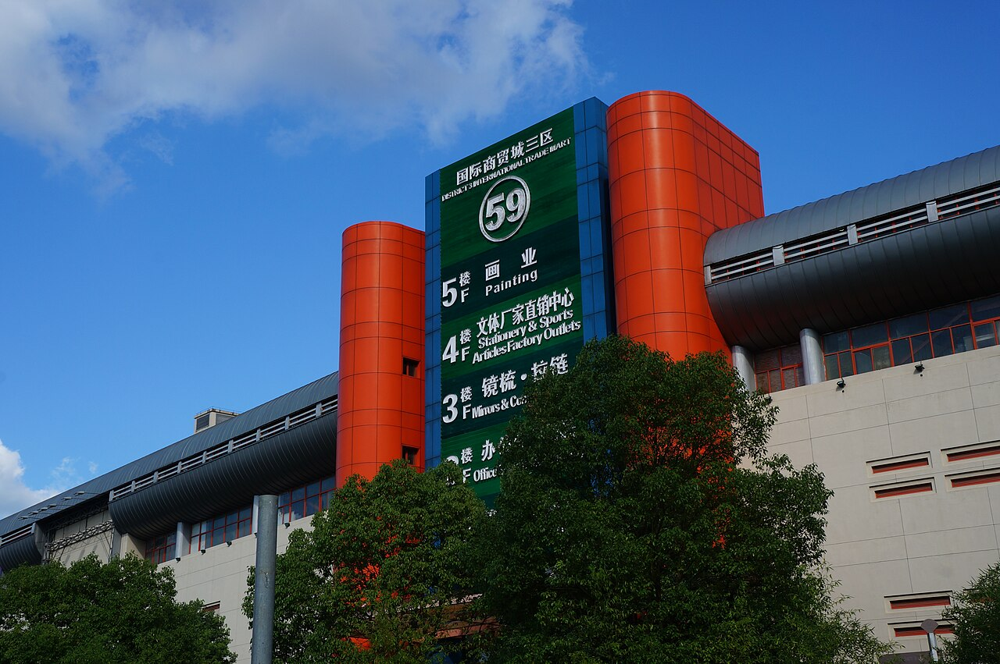

Quick answer: a reliable China procurement agent should help you prepare a clear RFQ, compare suppliers on the same specification, verify basic supplier evidence, coordinate samples, document quality control, receive cartons into a warehouse, consolidate shipments, and hand clean documents to the freight forwarder. The agent is not just a translator; they are your local execution and risk-control partner.

1. Start with a buyer-ready RFQ
A sourcing result is only as clear as the brief. If your RFQ only says "I need a storage box" or "I want beauty tools," suppliers will quote different materials, sizes, packaging and quality levels. This makes the cheapest price meaningless because each quotation is based on a different product.
Before asking a China sourcing agent to search suppliers, prepare the key facts: product photo or link, target material, size, color, logo need, packaging type, quantity, target price, destination country, deadline and any compliance requirement. If you do not know the exact specification yet, tell the agent your use case and buyer type so they can suggest a practical market version.
- Product photos, reference links or drawings.
- Target quantity, trial-order quantity and reorder expectation.
- Material, size, color, logo, packaging and labeling needs.
- Target price, destination country and shipping deadline.
- Any platform requirement, such as Amazon FBA carton labels or retail barcode rules.
2. What a procurement agent should actually do
A professional procurement agent is different from a simple freight forwarder or a platform buying account. The agent should connect product sourcing, supplier communication, sample evidence, quality inspection, warehouse receiving and export preparation. Each step should leave records that the overseas buyer can review.
| Stage | What the agent should deliver | Why it matters |
|---|---|---|
| RFQ review | Clarify missing specification, MOQ, packaging, destination and deadline | Prevents suppliers from quoting different products |
| Supplier sourcing | Compare Yiwu Market, 1688, Taobao samples, Alibaba and local factory options | Matches the product to the right buying route instead of one platform only |
| Quotation comparison | Normalize unit price, MOQ, packaging, sample fee, lead time and payment terms | Shows the real cost difference, not just the lowest unit price |
| Sample control | Receive samples, photograph details, compare versions and keep approved references | Creates a quality benchmark before bulk production |
| Quality control | Check quantity, defects, packaging, labels, carton marks and product function | Finds issues before balance payment and export shipping |
| Warehouse consolidation | Receive cartons from multiple suppliers, measure CBM, repack and prepare a packing list | Reduces fragmented shipping cost and document confusion |
| Shipping handoff | Provide carton data, invoice details, packing list and photos to the freight forwarder | Makes export, customs and final delivery smoother |
3. Compare supplier risk, not just price
Low price can hide expensive problems: unstable quality, wrong material, fake stock, unclear packaging, poor communication, missing export documents or inflated shipping. A procurement agent should help you separate supplier price from total landed risk.
For 1688 suppliers, the agent should check whether the seller is a real factory, trading company or distributor, whether the quoted product matches the listing, whether the payment beneficiary makes sense, and whether sample evidence is strong enough. For Yiwu Market booths, the agent should compare physical samples and packaging, because similar-looking booths can sell different grades.
For a new supplier, do not rush into a large order because the quote is attractive. Use a sample, a small pilot order or stricter inspection terms to create evidence first.

4. A practical RFQ-to-delivery workflow
The best procurement workflow is simple enough for the buyer to follow but strict enough to prevent silent mistakes. Use the same checklist for every supplier, then update it as samples and bulk orders move forward.
| Step | Buyer action | Agent action | Output to keep |
|---|---|---|---|
| 1. Brief | Send photos, links, quantity, target price and country | Clarify missing specification and buying route | RFQ checklist |
| 2. Search | Confirm acceptable alternatives | Shortlist market booths, 1688 suppliers or factories | Supplier comparison sheet |
| 3. Quote | Choose sample candidates | Normalize MOQ, price, packaging, lead time and terms | Quotation comparison |
| 4. Sample | Approve or reject samples | Receive, photograph and compare details | Sample approval record |
| 5. Order | Approve PO and payment terms | Confirm production scope and follow supplier progress | PO, invoice and production notes |
| 6. QC | Define critical defects | Inspect goods and document rework if needed | QC photos and inspection summary |
| 7. Ship | Choose route and destination instructions | Consolidate cartons and hand documents to freight partner | Packing list, carton photos and shipping plan |
5. Payment and fee transparency
Ask your procurement agent to show a clean cost structure. At minimum, you should understand the product cost, agent service fee, domestic transport, sample cost, inspection or repacking cost, warehouse handling and international freight estimate. If everything is combined into one unexplained number, it becomes hard to compare suppliers or control margins.
A transparent agent can still charge fairly for their work. The goal is not to find "free sourcing"; the goal is to avoid hidden markups, unclear responsibilities and surprises after the goods are ready.
6. How YiwuBridge helps overseas buyers
YiwuBridge supports importers, Amazon sellers, Shopify sellers, wholesalers and retail buyers who need practical China procurement support. We help with supplier search, quotation comparison, sample checking, supplier communication, quality control, warehouse consolidation, packaging coordination, Amazon FBA prep and export shipping handoff.
If your products come from Yiwu Market, 1688, Taobao, Alibaba, Guangzhou suppliers or several mixed sources, we can help you build a controlled sourcing route before you pay large deposits.